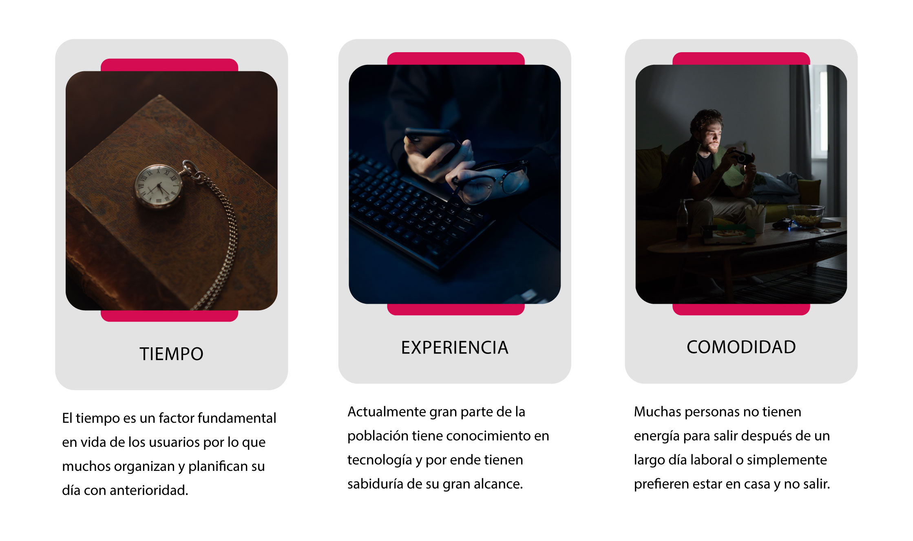

Proyecto no real
Septiembre 2022
Diseñador UX general
Con la llegada del internet y los avances tecnológicos, las personas pasan más tiempo conectadas, por lo cual la gran mayoría de usuarios prefieren adquirir productos cómodamente sin tener que salir, por lo consiguiente es difícil para los vendedores de comida callejera mantener un flujo de usuarios constante en sus negocios.
Construir una aplicación que le permita a los usuarios visualizar el menú y promociones disponibles en XD Street food cómodamente desde donde se encuentren y al mismo tiempo les permita realizar o programar pedidos con servicio de delivery.
Los resultados de la encuesta expresaron que todos los encuestados consumen comida rapida, pero la gran mayoria prefiere recurrir a aplicaciones o plataformas para adquirirlas.
A lo largo de la investigación, descubrimos que no solo la tecnología juega un factor fundamental en el proceso de comprar un producto...
